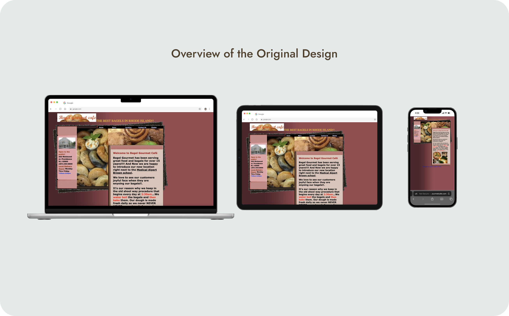
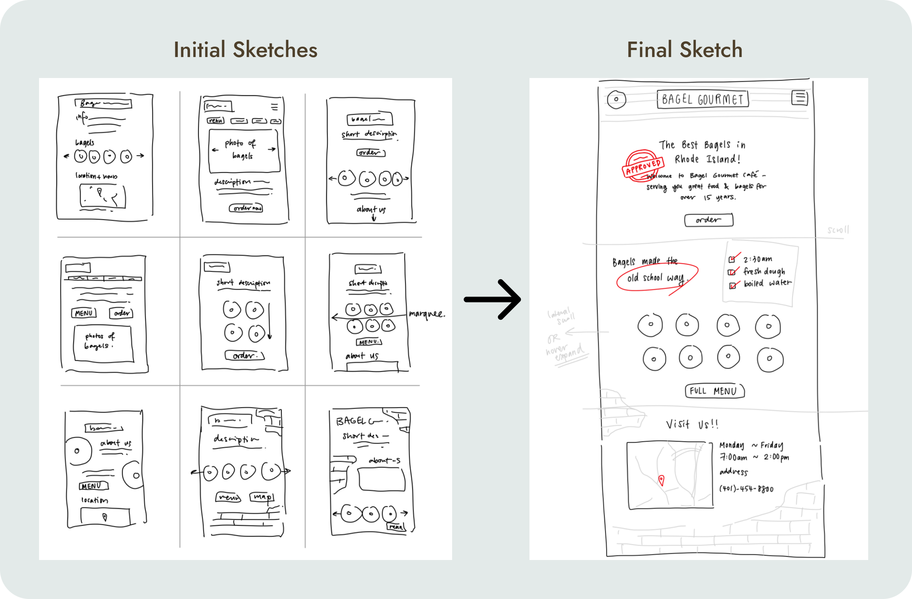
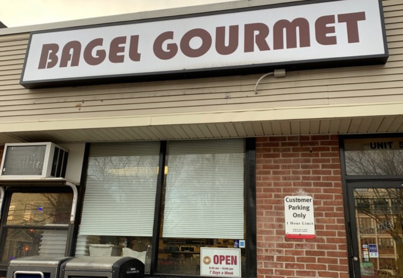
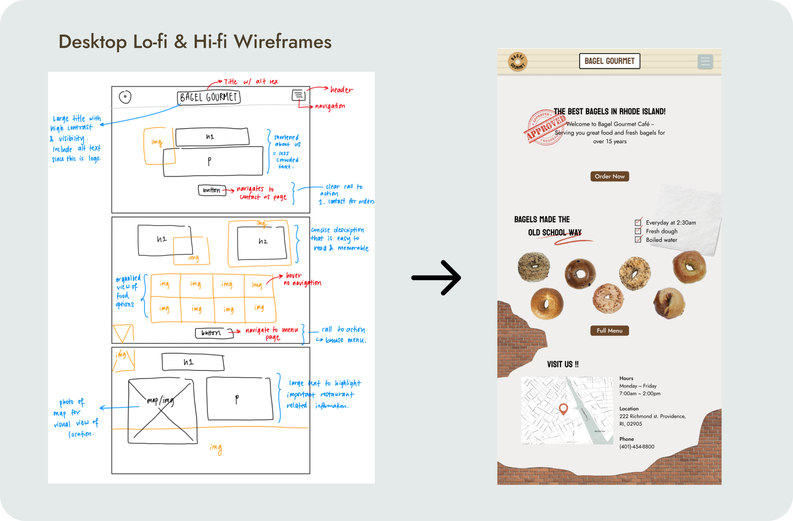
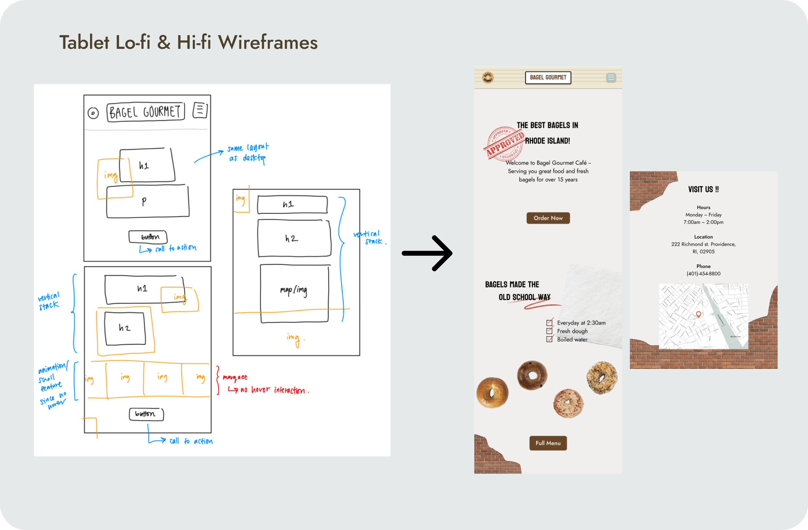
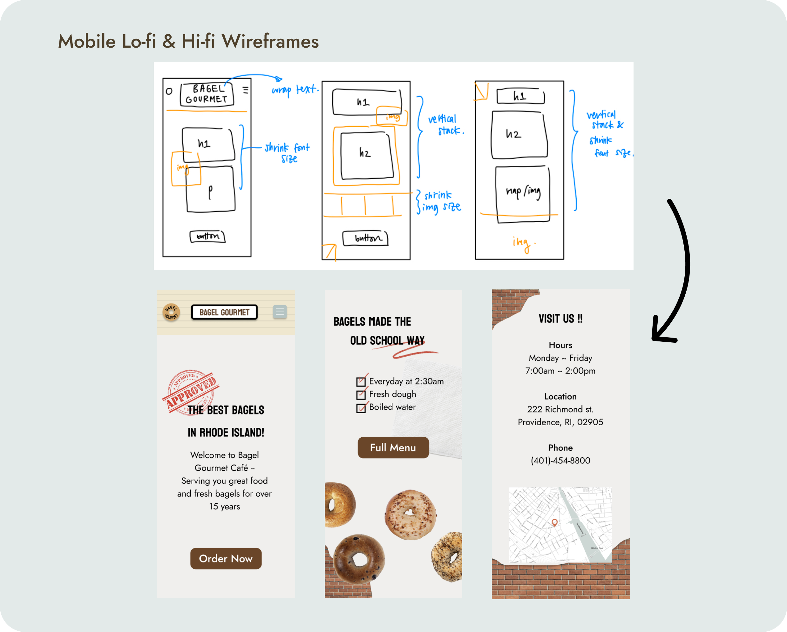
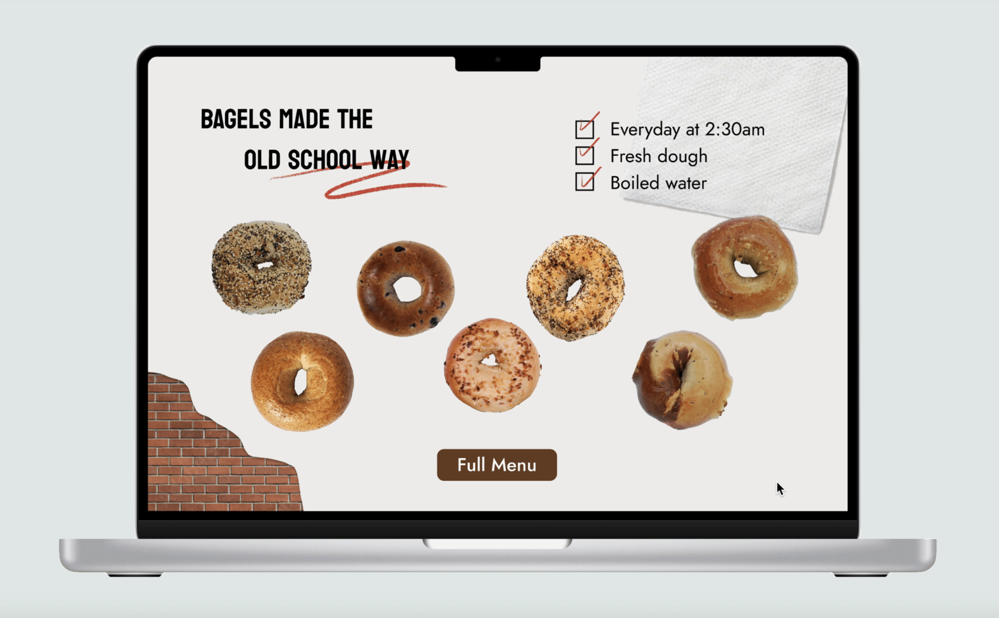

Bagel Gourmet Redesign
INTRODUCTION
MY ROLE
Responsible for conceptualization, design, and implementation of a redesigned website.
TIMELINE
February ~ March 2024

Website Link: http://bagelgourmetcafe.com/
PROBLEM STATEMENT
The lack of visual hierarchy, inconsistent navigation flow, and overwhelming presentation makes the user experience on the website difficult to follow and inefficient. The goal is to streamline the user flow and present the necessary information in a more accessible manner.
BREAKDOWN OF THE PROBLEM:
🧭 Inconsistent Navigation Options
The navigation bar along the top is hard to read and can be easily misinterpreted as labels. Another set of hyperlinks are also placed at the bottom - inconsistent user flow.
ℹ️ Information Overload
A lack of visual hierarchy causes disorganized layout of information and images, which can be confusing for the user to form a memorable impression of the restaurant.
❌ Unresponsive Design
The text box containing restaurant-specific information overflows on laptop and tablet devices. The purpose of the negative space is also unclear and visually unappealing.
WAVE ACCESSIBILITY ISSUES:
“Missing or Uninformative Page Title”
All texts displayed on the website are done through images - no explicit text - inaccessible for screenreaders.
“Null or empty alt text”
18 instances of missing alt text. Especially since website is heavily dependent on images, alt text should be included to ensure communication even when images aren't loading.
“Very small text”
5 instances of tiny text were detected on the navigation buttons, which decreases the visibility and memorability of the website.
VISUAL REDESIGN
The redesign process started with 9 speed sketches that captured potential visual layouts of the webpage. The final sketch was made by compiling my favourite features from the initial sketches and modifying them to be compatible with each other.


Based on the exterior design and overall aesthetic of the restaurant, a UI style guide was created. I also wanted to preserve the brick wall and architectural textures in the final design.
UI STYLE GUIDE:
LO-FI & HI-FI WIREFRAMING
In order for the redesigned website to be responsive to a variety of screen sizes, design prototypes were made for large, medium, and small devices. The main issues when resizing ocurred when elements flowed outside of the screensize and when text sizes didn't change dynamically. Therefore, @media screen was helpful in ensuring that the website design was responsive to any adjustments.



The final redesigned version of the website aims to target the accessibility concerns that weren't addressed in the original version. In addition, the implementation of dynamic resizing ensures optimal viewing and usability across all platforms, catering to a diverse range of users. By prioritizing accessibility and responsiveness, the redesigned website offers a seamless and inclusive browsing experience, enhancing engagement and satisfaction for all visitors.
